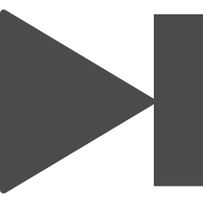
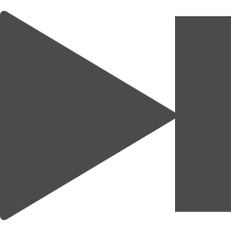

傘
King Gnu
- ♡
- ♥

 

さよなら
ハイになったふりしたって
心模様は土砂降りだよ
傘も持たずにどこへ行くの？
あれこれ
不安になったって
どうしようもない
“運命でしょ？”
曇りガラス越しのあなたには
もう何も届いちゃいない
3回目のアラームで
ようやく起き上がれそうな朝
眠い目を擦りながら
顔を洗ってコーヒーを流し込め
運命なんてハナから
信じきれやしないよな
深読みのし過ぎばかりじゃ
満たされやしなくて
もっと話したいんだ
もっと近づきたいんだ
遠くで眺めていたく無いよな
どんな時だって
さよなら
ハイになったふりしたって
心模様は土砂降りだよ
傘も持たずにどこへ行くの？
あれこれ
不安になったって
どうしようもない
“運命でしょ？”
曇りガラス越しのあなたには
もう何も届いちゃいない
ガラス片を避けながら
直行直帰寝落ちる毎日さ
満員電車に息を潜め
鳴り響いたベルが発車の合図さ
繋いだ手確かめた
確かに僕ら此処に居たのさ
寄せては返す波の中を
必死に立っていたんだ
ゴールなんか有りはしないよな
ただのレースとは違うよな
巷に流れるラヴ・ソングの
様にはいかないね
さよなら
ハイになったふりしたって
心模様は土砂降りだよ
傘も持たずにどこへ行くの？
あれこれ
不安になったって
どうしようもない
“運命でしょ？”
曇りガラス越しのあなたには
もう何も届いちゃいないんだ
結局は愛がどうとか
わからないよ未だに
そう言い放った自分の
頼りない背中を見た
さよなら
ハイになったふりしたって
心模様は土砂降りだよ
傘も持たずにどこへ行くの？
あれこれ
不安になったって
どうしようもない
“運命でしょ？”
曇りガラス越しのあなたには
もう何も届いちゃいないんだ